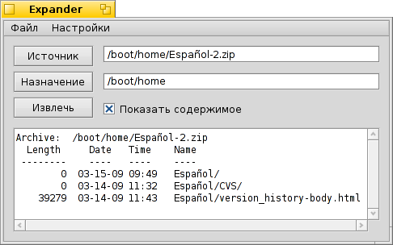

Русский
Русский Français
Français Deutsch
Deutsch Italiano
Italiano Español
Español Svenska
Svenska 日本語
日本語 Українська
Українська 中文 ［中文］
中文 ［中文］ Português
Português Suomi
Suomi Slovenčina
Slovenčina Magyar
Magyar Português (Brazil)
Português (Brazil) English
English Распаковщик (Expander)
Распаковщик (Expander)
| Расположение в Deskbar: | Отсутствует в меню Deskbar. Обычно запускается при двойном щелчке по файлу. | |
| Расположение в Tracker: | /boot/system/apps/Expander | |
| Настройки хранятся по адресу: | ~/config/settings/Expander_Settings |
Распаковщик - это небольшая утилита для распаковки самых распространенных архивов, в том числе zip, gzip, bzip2, rar и tar.gz.
Просто дважды щелкните левой кнопкой мыши по архиву, и появится следующее окно:

| ALT O | Открывает диалог, в котором можно выбрать архив для распаковки. | |
| ALT D | Открывает диалог, в котором можно выбрать место назначения, куда следует распаковать архив. | |
| ALT E | Начинает распаковку архива. Остановить распаковку можно при помощи сочетания клавиш ALT K. |
Вы можете включить\выключить отображения списка файлов архива, отметив пункт Отображать содержимое, либо использовать сочетание клавиш ALT L.
Expander может распаковать только весь архив целиком.
Вы не можете выбрать отдельные файлы для распаковки или добавить\удалить файлы из архива.
Вы не можете выбрать отдельные файлы для распаковки или добавить\удалить файлы из архива.
Пункт меню или сочетание клавиш ALT S откроет панель настройки, которая позволяет настроить поведение Expander.
Опции говорят сами за себя: